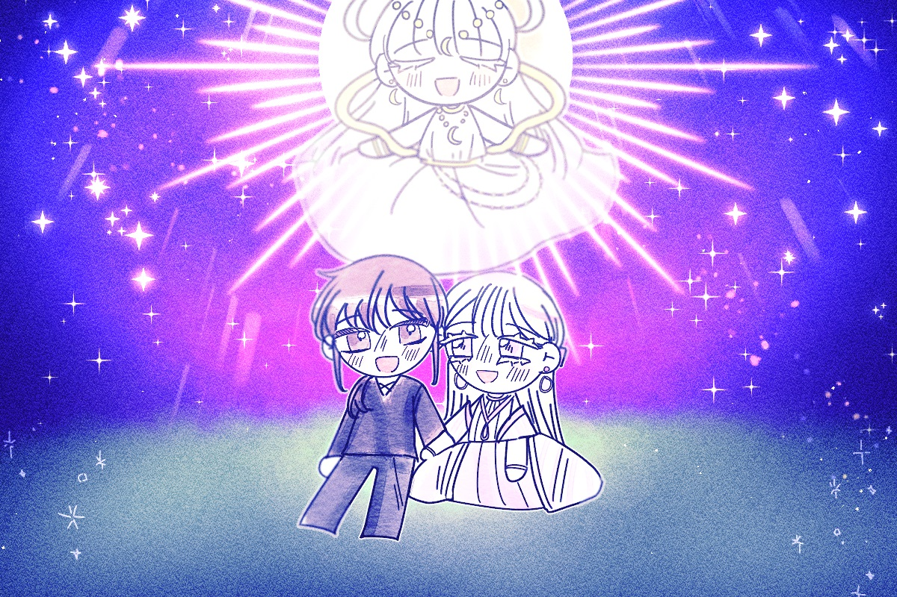

저는 애너벨을 업고 굴을 따라 올라갔습니다.
그 동안 제 머릿속에는 온갖 생각들이 스쳐지나갔죠.
악마들은 왜 저에게 이런 거짓말을 한 것일까요?
애초에 악마들은 저에게 무엇을 원했던 것일까요?
아마도 그들은 제가 스스로 애너벨을 버리게 되는
그런 비극적인 결말을 즐기기 위해 그랬던 것이었겠지요.
만약 제가 악마들의 말에 따라 끝까지 애너벨을 돌아보지 않았다면
어떻게 되었을지 생각조차 하기 싫었습니다.
그러나 이제 그런 고민은 아무런 의미가 없었습니다.
저는 이렇게 애너벨과 함께 지상으로 올라왔고,
모든 게 좋게 끝났으니까요.
우리는 세상에서 가장 행복한 표정으로 서로를 껴안았습니다.
다시 빛을 되찾은 달님도 우리를 내려다보고 있었습니다.
이제는 정말 그 무엇도 우리의 사랑을 갈라놓을 수 없을 거예요.
